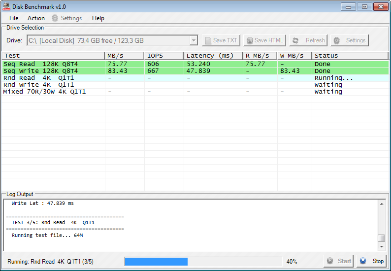
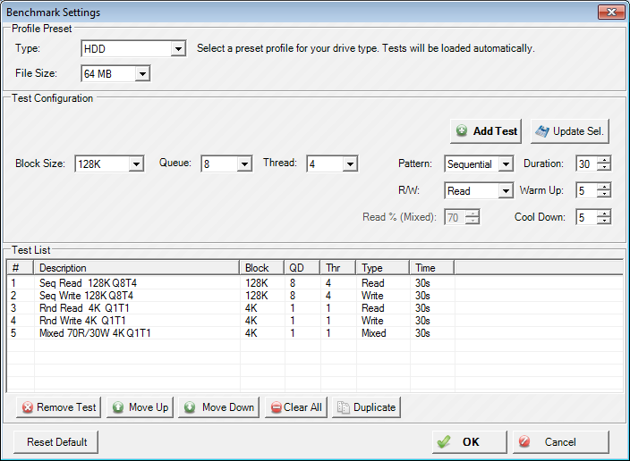
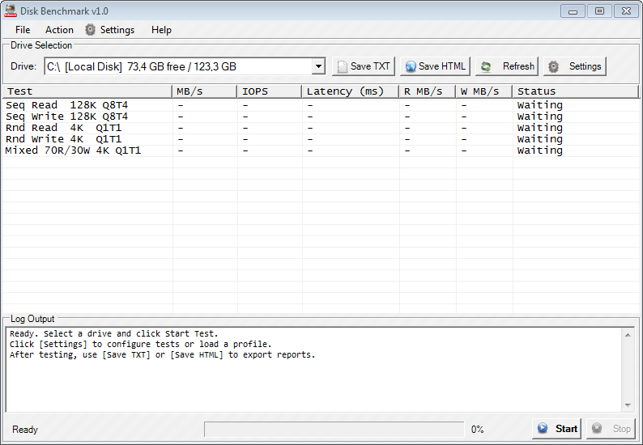
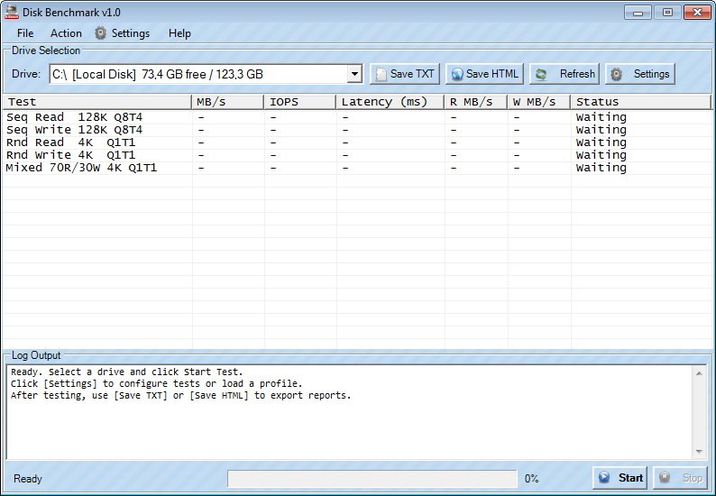
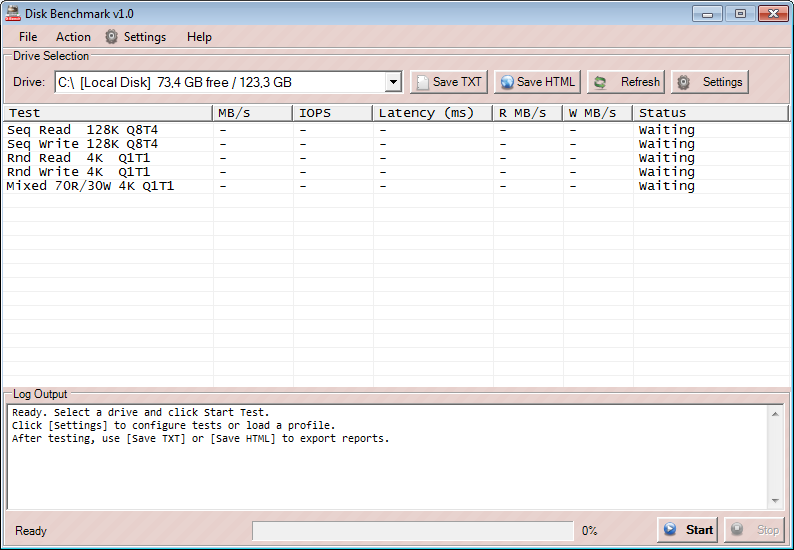

Download Disk Benchmark 1.0
Disk Benchmark (D-Bench) is a free Windows utility for measuring the read/write performance of SSDs, HDDs, NVMe drives and USB storage. It reports throughput in MB/s, IOPS and latency, with three classic themes (Default, Blue, Red) and presets for HDD, SSD and Flash Drive workloads.
- > Download for Windows 8 / 8.1 / 10 / 11*Updated
- > Download for Windows Vista / 7*Updated
- > See Documentation
- > Support / Donate
Screenshot:


Download Link
| for Windows 8 / 8.1 / 10 / 11 | ||
| Default Themes |  |
Download (470 KB) See Documentation |
| Blue Themes |  |
Download (470 KB) See Documentation |
| Red Themes |  |
Download (470 KB) See Documentation |
Download for Windows Vista / 7
| for Windows Vista / 7 | ||
| Default Themes |
Download (470 KB) See Documentation |
|
| Blue Themes |
Download (470 KB) See Documentation |
|
| Red Themes |
Download (470 KB) See Documentation |
|
About Disk Benchmark
D-Bench is a graphical front-end for measuring storage performance on Windows. It runs sequential and random I/O workloads at configurable block sizes, queue depths and thread counts, then reports throughput (MB/s), IOPS, and average latency for each test. Results can be exported as plain TXT or as a styled HTML report for sharing.
Frequently Asked Questions
What is Disk Benchmark (D-Bench)?
Disk Benchmark (D-Bench) is a free Windows utility that measures how fast your storage device (SSD, HDD, NVMe or USB) can read and write data. It produces accurate, repeatable results in MB/s, IOPS and milliseconds.
Which Windows versions are supported?
Two builds are provided: one for Windows 8, 8.1, 10 and 11, and another for Windows Vista and 7. Both builds come in Default, Blue and Red themes.
Is Disk Benchmark free?
Yes. D-Bench is free to download and use. The download size is about 470 KB. If you find the tool useful, you can support the author via the GitHub Sponsors page.
What metrics does D-Bench report?
For each test it reports total throughput (MB/s), IOPS (input/output operations per second), average latency (ms), and separate read and write throughput (R MB/s, W MB/s). See the Understanding the Results section of the documentation for full details.
How do I export benchmark results?
Click Save TXT for a plain-text report, or Save HTML
for a styled, self-contained HTML report. Keyboard shortcuts:
CTRL+S for TXT, CTRL+SHIFT+S for HTML.